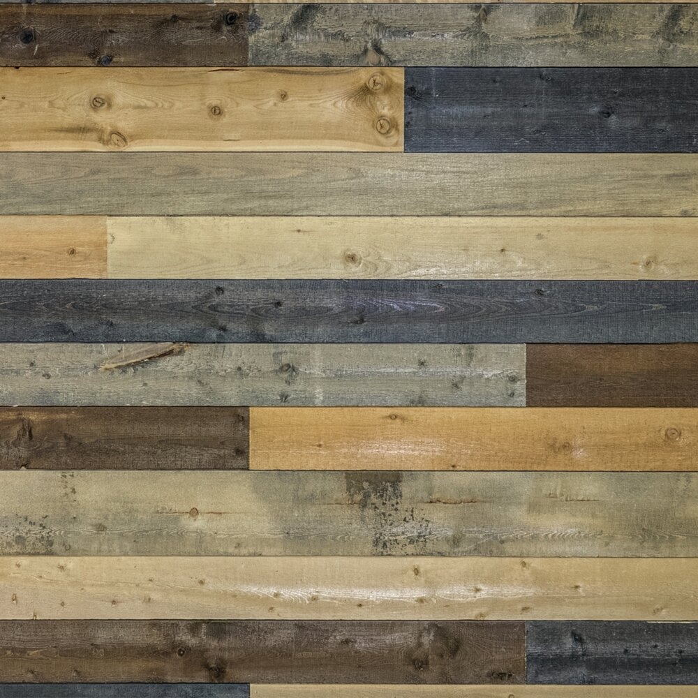
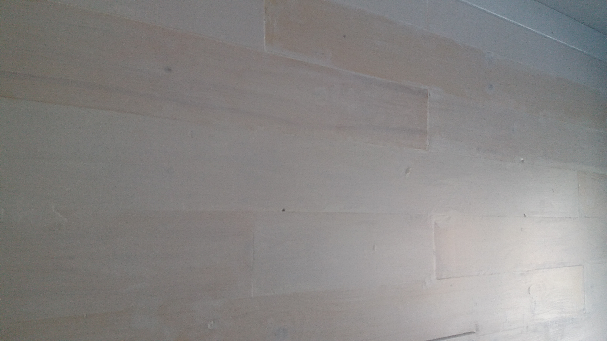
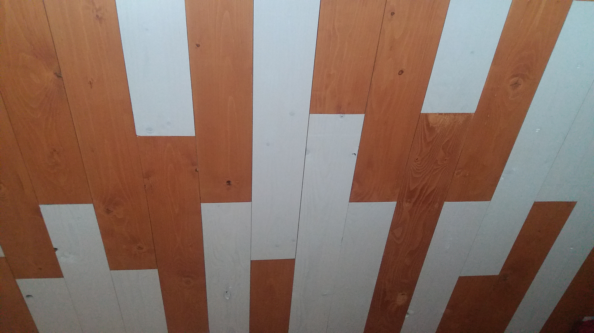
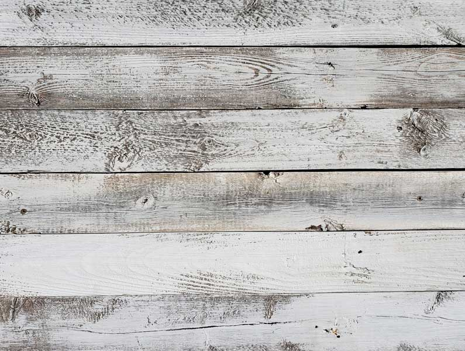
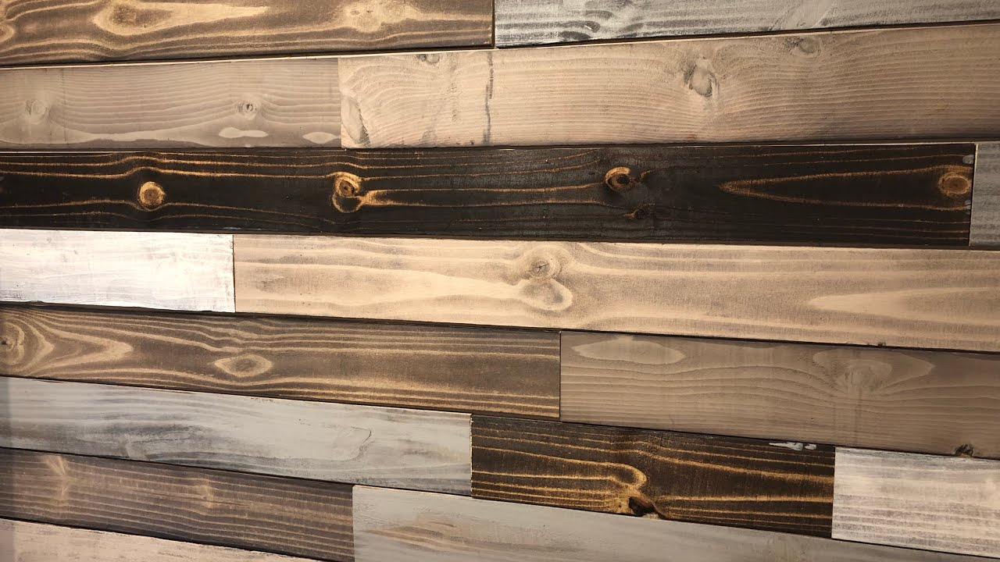
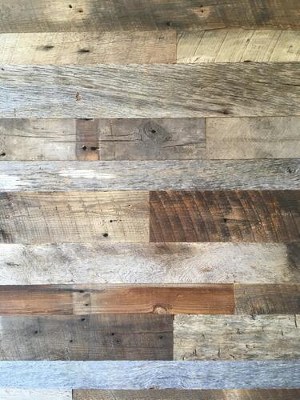

Створення дизайну
На початковому етапі я розробляю і пропоную на вибір клієнта кілька варіантів дизайну стіни.
Я дуже люблю дерево, як матеріал. Тому я вирішив працювати тільки з ним. Це не проста робота, але я знаю як зробити так, щоб декор ваших стін змусив ваших гостей бути в захваті!
На початковому етапі я розробляю і пропоную на вибір клієнта кілька варіантів дизайну стіни.
Важливий крок - це вибір сорту деревини і матеріалів, що в подальшому будуть окрасою для стін. Перевагою є екологічність таких.
В найкоротші терміни я монтую дерев'яні дошки чи інший матеріал і наношу покриття.
Коли я був малим хлопчиськом, то завжди вдивлявся в красу обробки деревини на верстатах в майстерні. Змалку мене це вабило. Сьогодні я займаюсь креативним збагаченням вашого житла за допомогою планерних дощок, фанери або з іншого матеріалу. Мені це подобається і вважаю, що я успішний в даній сфері!
Ось кілька моїх проектів...
     300 грн/м
від 2000 грн